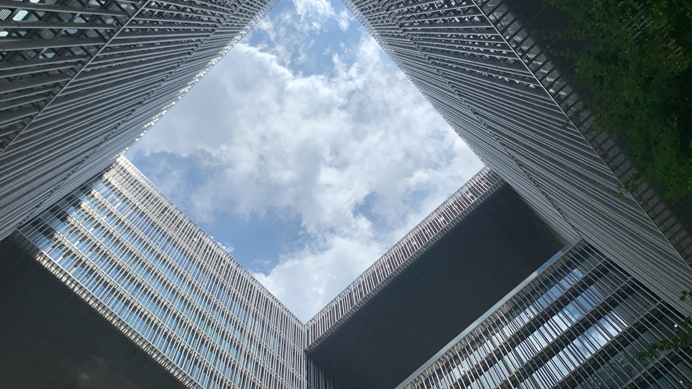
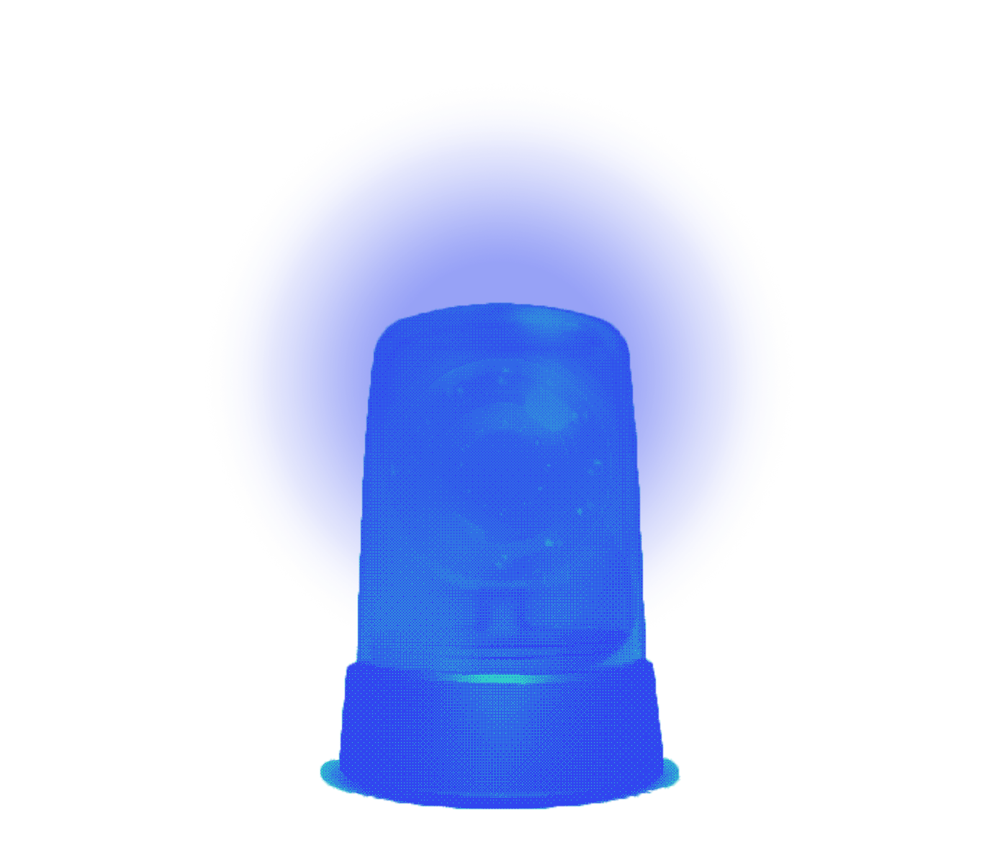
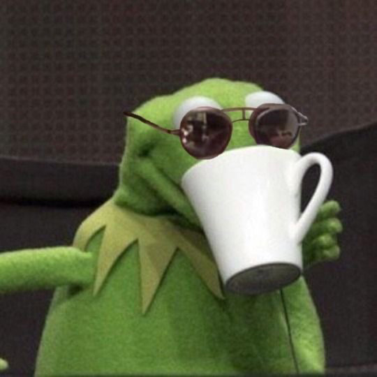
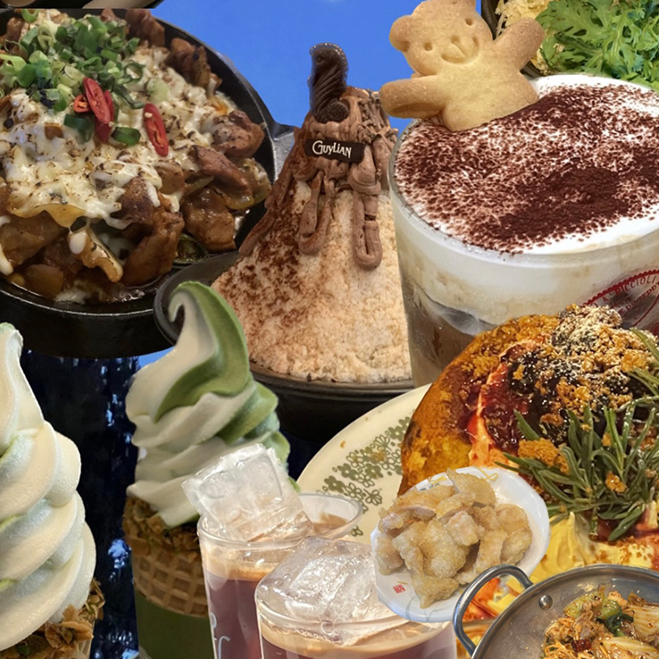
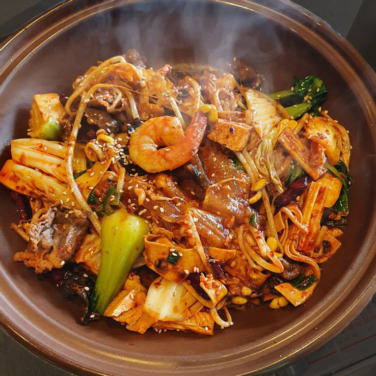
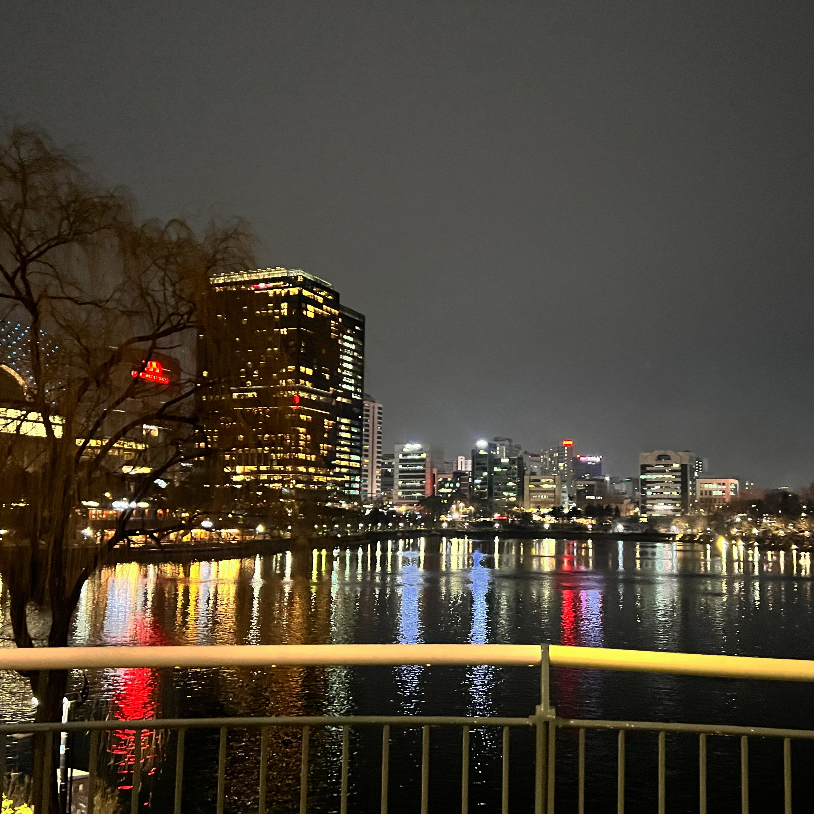
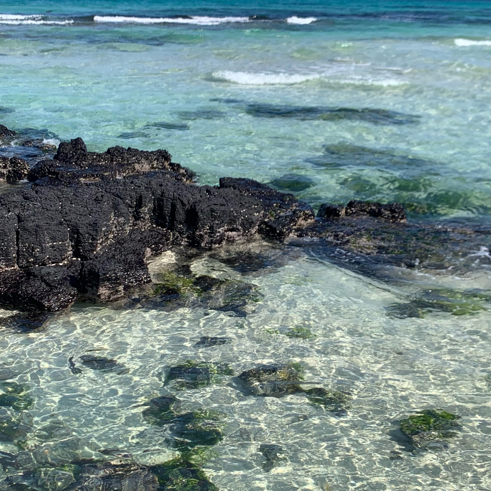

( ( STORY ) )
1
만병의 근원

대학 입시부터 금속공예학과 졸업전시까지,
쉼 없이 달려온 내가 큰 마음 먹고 선택한 휴학.
그렇지만 쉬는 것도 쉬어본 사람이 잘 쉰다며,
막연하게 시작한 휴학은 나의 몸을 근질거리게만 만들었다.
친구들은 개강하거나 취업준비하느라
한동안은 혼자 뒹굴거리는 것이 솔직히 지루했다.
파워 ENFP의 본성 어디 안가는지, 뭐라도 해야겠다 싶었다.
그래서 시작한 자격증 공부와 인턴 준비,
그리고 올해 개강 직전까지의 인턴 생활 7개월..
물론 인턴을 하면서 그동안 접해보지 못했던 다양한 실무 경험,
새로운 사람들과의 만남 등,
아깝지 않은 시간이었고 너무 즐거웠다.
그러나 반복된 출퇴근과 더불어 과한 커리어 욕심으로
이것저것 일을 벌렸던 것이 독이 되었는지,
아래와 같은 부정적인 단어들이 머릿속을 떠다녔고,
건강까지 악화되어 나의 온 몸에서 위험 신호를 보냈다.
‘무기력, 우울, 지침, 슬럼프..’
2
죽겠어요
어느 순간 점점 생기를 잃어가는 나의 눈동자와 함께
원인 모르게 몸무게도 급격하게 줄었다.
정신없이 바쁘게 살았던 습관이 익숙해서, 하루라도 생산적인 일을
하지 않으면 게을러지는 것 같은 기분에 몸은 힘들어도
내가 선택한 건데 해야지 어쩌겠어, 하는 마음으로 버텼다.
처음 맞닥뜨린 사회생활로 인한 스트레스,
본격적인 디자인 실무를 겪고 난 후 나의 진로고민..
이러한 생각들로 머리가 지끈거렸다.
이것이 미래 내가 될
직장인의 모습일까..?
이러려고 휴학을 했나..?
내가 무엇을 위해
휴학을 했지..?
.
.
.

그동안 스스로를 재촉하며 숨막히게만 했지, 나를 돌아볼 생각은 1도 하지 않았다.
그런데 건강의 위협을 한 번 크게 느끼고, 정신 차리게 되었다.
정말 내가 휴학을 시작했던 본질적인 이유인 ‘휴식’, ‘힐링’을 찾아
남은 휴학 기간 동안만이라도 즐겨보고 싶었다.
그제서야 나는 쉬면서 나의 멘탈을 치유할 수 있는 것들을 찾아보기 시작했다.
슬기로운 환자생활 의 시작이다.
( ( LIST ) )
그렇게 찾아낸
나만의 힐링 리스트
☕️ 아아와 디저트 🍰
이제 이 두 가지는 나에게 없어서는 안 될 옵션같은 존재가 되었다.
정말 기운 없을 때
아아 한 모금 쪽- 빨고 달달한 디저트 한 입이면
눈동자에 생기가 돌고 손끝에 피가 도는 게 느껴진다.
🍽 맛집&예쁜 카페 뿌시기 🍽
나는 친구들과 있을 때 힘을 얻고, 기운을 차리는 극E의
외향형 인간이다.
특히 맛집에서 다같이 맛있는 걸 먹고,
카페에서 한껏 수다 떨어주면 금세 행복해진다.
🔥 마라샹궈와 꿔바로우 🔥
이제 마라 없이는 살 수 없다. 정말 극도로 스트레스를 받고
힘이 들 때, 무조건 먹어줘야 한다.
오죽하면 친구들이
내가 지친다고 하면 마라 먹으러 가자고 먼저 제안한다.
☁️ 석촌호수 🌙
건강을 위해 운동 삼아 집 근처 석촌호수를 한 바퀴씩 걷기 시작했는데,
생각 정리도 잘 되고 오히려
잡생각이 사라질 때도 많아서
정말 추운 날 빼고는 한 두 바퀴씩 돌게 되었다.
고요하고 잔잔한 호수를 바라보고 있으면 리프레시 되는 기분이다.
✈️ 여행 📷
매년 여행을 두 번씩은 꼭 가려고 하는데, 인턴 때문에 다녀오지 못한 것을
몰아서 다녀왔다. 사실 그동안 쉴 때도 괜히 쉬어도 되는 건가 불안해서
마음 편히 다녀온 적이 없었다. ‘이번 만큼은
그냥 아무 걱정없이 실컷 놀다 와야지!’ 하며
다녀왔다.
이렇게 편하고 안정된 마음으로 다녀온 여행은 처음이었다.
/

하늘을 보고 있다가 달이라도 발견하면,
괜스레 기분이 좋아진다.
For my healing
and happyness
.
.
.
( ( ENDING ) )
답답했던 속이 싸-악
짧지만 슬기로웠던 환자생활을 잘 마무리하고
학교로 다시 돌아와
이제는 조금 천천히 달려보려고 한다.
포기할 건 포기할 줄도 알아야 한다고, 뭐든 다 해내려고 뛰어드는 게
오히려 병이 된다는 걸 아주 혹독하게 몸소 체감했다.
그 때마다
만들어둔 나만의 힐링 리스트를 떠올리며 영양제 챙겨 먹듯
꾸준히 챙기니까,
몸도 마음도 하루가 다르게 건강해져갔다 :)